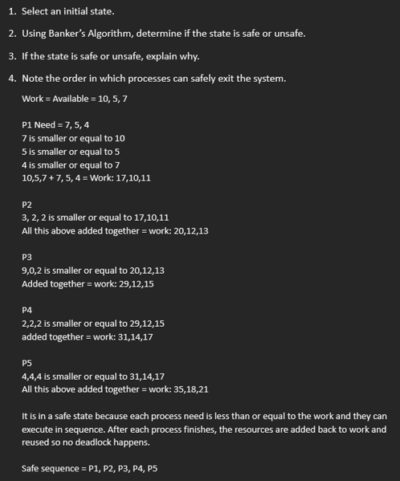
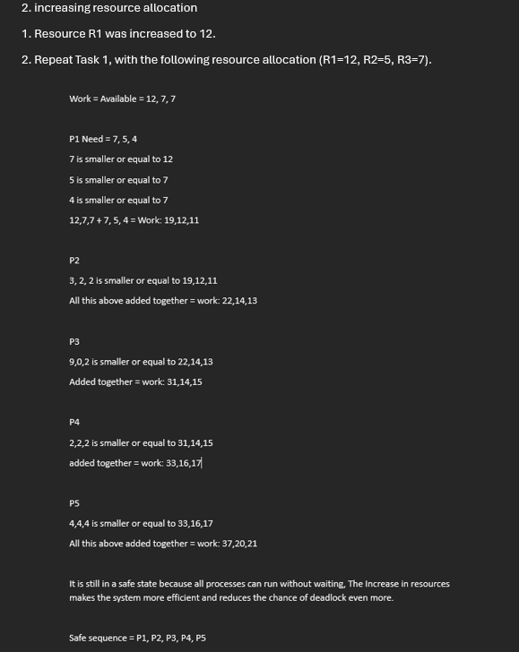
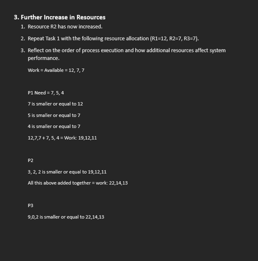
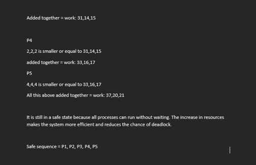
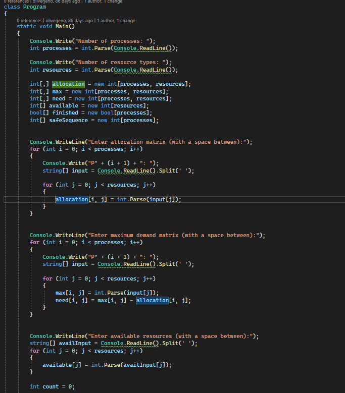
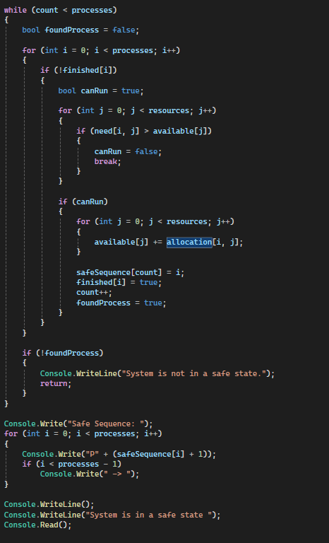
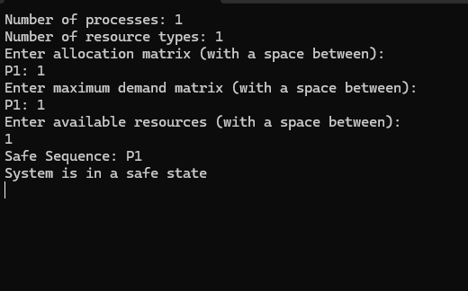

I compared each process’s Need with the available resources. If the process could run, I added its resources back to Work and repeated the steps until all processes were completed.

I did the same steps again but with more resources. The result was still safe and the sequence stayed the same. Having more resources makes it easier for processes to run and lowers the chance of deadlock.


More resources was added but the system was already in a safe state so the sequence stayed the same. The extra resources just make it easier for processes to run and finish without waiting.



The program first asks the user to input the number of processes and resource types using Console.Write("Number of processes: "); and Console.Write("Number of resource types: ");
Then I created arrays to store allocation, maximum demand, need, available resources, finished processes and the safe sequence. I did this with Console.WriteLine("Enter allocation matrix..."); and Console.WriteLine("Enter maximum demand matrix...");
The maximum demand matrix is then entered using Console.WriteLine("Enter maximum demand matrix..."); and my program calculates this by using need[i, j] = max[i, j] - allocation[i, j]; All this is stored within the array.
A loop is then used while (count < processes). Inside this loop, each process is checked to see if it can run by comparing if (need[i, j] > available[j]). If the need is less than or equal to the available resources, the process is allowed to run. The program then adds its allocated resources back to the available resources using available[j] += allocation[i, j];
If no process can run in a full loop, the program outputs "System is not in a safe state." If it is safe, Console.Write("Safe Sequence: "); is written along with "System is in a safe state."